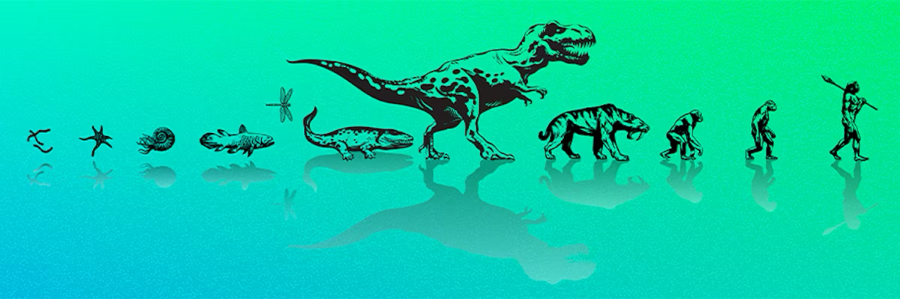

1 What evolution is
DRAFT 20250113
1.1 Introduction to Evolutionary Biology
Evolutionary biology stands as one of the most comprehensive and far-reaching disciplines within the biological sciences. It is the only scientific explanation for the diversification of life on earth. Its primary goals are to not just discover the history of life, but to understand the causes of diversity and characteristics in organisms, and apply evolutionary theory to explain biological phenomena. Unlike other areas of biology, which focus on proximate causes (immediate explanations for phenomena), evolutionary biology is concerned with ultimate causation, probing deeper into the long-term reasons behind biological diversity.
Evolution provides a perspective that enriches and informs every field of biology, from molecular biology to ecology. As such, it serves as the central unifying theory. As Dobzhansky famously stated, “Nothing in biology makes sense except in the light of evolution.” Though there a good deal of misunderstanding in terms of what Dobzhansky actually meant by this (for example, see Griffiths (2008) or Giaimo (2023)), nonetheless this quote highlights the foundational role that evolutionary theory plays across all branches of biology. For this reason, evolution is much more than a “discipline” in the biological sciences. It is something much grander.
Despite its centrality to biology, evolution is often misunderstood by a substantial portion of the general population. Recent polls indicate that around 60% to 65% of Americans believe that humans and other living things have evolved over time, an increase compared to just 35% around fifteen years ago. This actually is a reassuring statistic in that it implies an increasing acceptance of evolution. However, there is a notable partisan divide in beliefs about evolution, with the Pew Research Center reporting approximately 67% of Democrats and independents saying humans have evolved, compared to only 43% of Republicans. This gap has tended to widened over time, which is rather troubling.
What are the drivers of these misunderstandings concerning evolution and its role in the natural world? Clearly there are a variety of causes, the most important being religious or political influences and poor representation of evolution in educational curricula. Many Americans who accept evolution also believe that God played a role in guiding the process. About 24% think that a supreme being guided evolution, while 35% attribute it to natural processes like natural selection. Though the polling data suggest an increasing (or at least stable) level of acceptance of evolution in the last decade or so, these findings highlight the complex interplay between education, religion, and political ideology in shaping public acceptance of evolutionary theory in the United States.
Another issue driving misunderstandings of evolution is the varied meanings of the word “evolution” itself in non-biological contexts, leading to confusion by the general population. For that reason alone, it is crucial that we start our discussion of evolutionary theory with a clear and unambiguous definition.
1.2 Defining Evolution
At its broadest, evolution simply means “change” (from the Latin root evolvere, meaning unfolding or unrolling). However, this word change in of itself is really much too simplistic and vague to capture the biological concept of evolution. In biological terms, evolution specifically refers to the change in heritable traits across generations. Darwin described evolution as “descent with modification,” meaning that traits are passed down from one generation to the next, often with some variation, leading to diversification over time. These two statements make for a good starting point for coming up with a working definition for evolution that is both necessary and sufficient. However, before we settle on a formal definition, let’s take a few minutes to think a little about evolution as something a more than a scientific theory, but as an emergent property of all living things.
Evolution as an emergent property
I would argue that not only is evolution the explanation for the diversity of life on earth, but that it is an emergent property of what we call life, and therefore inescapable. The argument goes something like this:
Consider a system that has four general properties:
- There is group of similar entities that make copies of themselves (i.e. reproduce) in some manner.
- Some characteristic varies to some extent among the individuals making up this group.
- There is some mechanism whereby the next generation of entities (offspring) tend to resemble their parent(s) to some degree.
- Finally, there is a sorting process whereby some individuals make it to the next generation but others do not. This sorting process can be one of two types
- stochastic, whereby whether an individual makes it into the subsequent generation is completely random.
- deterministic, such that the value of characteristic (that varies among individuals) determines in some capacity whether the individual makes it into the subsequent generation.
The nature of this system does not really matter, so long as it has all four of the above properties. It could be something completely inorganic and not what we define as life, say for example a group of very similar computer programs that were coded to all do the same thing, plus they are self replicating (make copies of themselves every generation), or it could be some non-carbon based life form beyond our current understanding. Does not matter. All that matters us that the system has the four above properties.
What would happen to this group of entities over time given the above conditions? It should be quite clear: the percentage of the group made up of different forms of the variable characteristic will change over time. The frequency (percentage in the population of programs) of the various versions of the character will increase or decrease over time; some versions may even completely disappear, all dependent on the sorting process (plus a few other important considerations). These changes may occur quickly or slowly, be large or subtle, but they will occur. It is a natural consequence of a system with these four properties.
You can simulate this system easily and satisfyingly with large bag of blue and white Wheaton M&Ms. Can you figure out how?
This process, whereby we see a change in the percentage of the group made up of certain versions of the character over time, is what we call evolution. Any system with these four characteristics will undergo this process. It is inescapable (so long as the system has all four characteristics). It is in fact an emergent property of this system.
Evolution as an emergent property of life
For the above argument we described a very generalized system. Now let’s make specific to biological systems. To restate the four properties relative to a biological system, we would phrase them as:
- A population of individual organisms (of the same species).
- Variation among individuals in the population for some characteristic, be it molecular or phenotypic (i.e. mutation).
- The character has a genetic basis such that changes in the genome (mutations) that determine that character are passed on to offspring (in other words heritable similarity, or inheritance).
- Sorting process occur every generation, which from a biological perspective can be either:
- Random or stochastic, what is referred to as genetic drift
- Deterministic, what is referred to as natural selection
In this case, the end result is what we refer to as organic evolution, a change in frequency of a heritable character in a population over time. As in the general system described previously, it is inescapable (so long as four criteria are present) and an emergent property of all life.
That being the case, it makes little sense to argue that evolution does not happen, as for example creationists would propose. The very fact that organisms are biological entities guarantees they will evolve. It is…inevitable.
1.3 Formalizing what evolution is
To summarize, for evolution to occur, several conditions must be met:
- There must be a population of entities.
- Variation must exist among the individuals in the population.
- Traits must be heritable, meaning offspring resemble their parents.
- A sorting process must take place, where certain traits increase or decrease in frequency within the population.
These processes together drive evolution, with populations of organisms—such as species—undergoing genetic changes over time. The mechanisms of inheritance ensure that traits are passed on, while mutation introduces the necessary variation. Evolutionary sorting mechanisms include both random processes (such as genetic drift) and non-random processes like natural selection. As we will see later, there are other important mechanisms that drive evolution. This is important to recognize: that evolution can occur without the action of natural selection (e.g. by stochastic sorting (genetic drift). However, it is only natural selection that leads to the evolution of adaptations—improvements in the function of traits.
A working definition for evolution
We often find evolution defined in the following way:
Descent with modification of heritable variation from a common ancestor over time (often followed by diversification).
This is a fine definition, and you will see some form of this definition in just about every evolution text out there. Science being science, it probably comes as no surprise to you that there have been numerous other definitions proposed over the decades since Darwin, some better than others. Here is a very brief list of a few from some popular undergraduate biology texts:
- the change in the properties of populations of organisms, or groups of such populations, over the course of generations
- change in hereditary characteristics of group of organisms over the course of generations
- descent with modification of different lineages from common ancestors
- ongoing adaptation of organisms to environmental challenges and change
Unfortunately in many undergraduate texts or online resources you may find, the definition of evolution specifically states natural selection as the driving mechanism. That is unfortunate if not down right incorrect. You can have evolution occurring without the action of natural selection, as we mentioned above, so for that reason alone, we want to avoid adopting definitions that specificy natural selection.
A very popular definition that has increased in acceptance over the last couple of decades is “the change in gene frequencies over time”, or more accurately “the change in allele frequencies over time”. This definition is appealing to most researchers since any change in the frequency of the heritable phenotypic character will result in a change in the frequency of alleles at the gene or genes that contribute to that character, making it an appealing mechanistic definition.
The desire for a mechanistic definition of evolution makes good sense. A mechanistic definition means basically “if you see it, you have it”, which is why this definition increased in popularity since the molecular revolution for obvious reasons. While many evolutionary biologists seem to prefer “change in gene frequencies over time”, in my opinion such a strict mechanistic approach can sometimes lead to downplaying some very important processes in evolution, such as the role of gene regulation, development, and the complexities of the genome-phenotype connection. As we continue our discussion of evolution throughout this OER, we will explore some of these complexities, and perhaps my opinion will make a little more sense.
When considering this definition today, we need to take a very broad definition of what a gene and an allele is. Specifically, a gene is formally defined either in the Mendelian sense as a basic unit of inheritance, while a more contemporary definition would be any region of a genome that codes for a functional RNA. An allele is defined as a variant form of a gene. Unfortunately, this definition can lead to some confusion if strictly interpreted since it seems to imply that changes in the frequency of variants outside gene regions that may have no obvious phenotypic effect (e.g. simple nucleotide changes in regions of the genome that contribute nothing to the functioning of an organism) are not considered to be evolution, and that most certainly is NOT the case.
Sounds like nit-picking, but in the natural sciences, language matters; and it most definitely matters when discussing evolution. Clear and concise definitions go far in avoiding misunderstanding and misrepresentation.
Perhaps a better definition might be something along the lines of “change in the frequency of any genomic variant in a population over time”. Thanks to recent advances in our understanding of genomes and how they function, this definition allows us to move away from a specific focus on genes and alleles to encompass all manner of variation that characterizes genomes, from classical Single Nucleotide Polymorphisms (SNPs) found in coding, noncoding, regulatory, and intergenic regions (between genes), to small and large Structural Variants (SV). It is not even necessary that this variation effects a phenotypic characteristic (though if it does not it may be difficult to see how selection could act on it…but it can). So long as it is variation in the genome that gets passed on from parents to offspring, if it changes in frequency in a population over generations, it is evolution1. We will explore genomic variantion more in the later chapters.
Admittedly, the above definition is not very graceful; it really doesn’t role off the tongue. Perhaps we should just leave it as the change in the frequency of heritable variation in a population over time, remembering that heritable variation is broadly defined. Not particularly specific, but with plenty enough wiggle room to accommodate all the exciting and very cool changes that we are finding in genomes today.
And with that, this kind of closes the loop on our discussion of how best to define evolution since this definition is our original one given above.
So which definition is best? Personally, so long as the definition encapsulates the essential components of change in frequency, heritable variation, population, and over time, I am good with it.
1.4 Some important points from our definition of evolution
Let’s go back to the common definition of evolution mentioned above Important 1.1.
We can break the above definition into three key concepts
descent with modification (change)
heritable variation
over time
Considering our discussion above, it is obvious why the definition includes these three key concepts. Notice though what is not specified in this definition
It says nothing about the origin of life. Though evolutionary theory can provide profound insights into how life on earth may have started, it does not necessarily need to explain the origin of life on earth. Evolution occurs the moment life has begun, by whatever process. For that reason criticizing evolutionary theory because it does not explain how life began is not a valid criticism.
It says nothing about the formation of a new species. It is important to note that evolution does not equate to the formation of new species. Evolution certainly can lead to new species as we will see in later chapters, but it is not what defines evolution per se. This common misunderstanding is often exploited by those who reject evolutionary theory. Evolution encompasses much more than speciation; it is a broader process of change within populations over time. Any change in the frequency of a genomic variant in a population over time is evolution, and it need not lead to the formation of a new species.
Evolution is not the same as natural selection. Without a doubt, natural selection can lead to evolution.2 As mentioned above, evolution can happen due to other mechanisms beside natural selection. If these two statements do not make sense to you, hopefully they will after we discuss the nature of natural selection and the mechanisms that drive evolution a little later.
From a long-term perspective, evolution describes the branching of lineages from common ancestors (macroevolution). In the short term, it describes the diversification and oftentimes adaptation of organisms to environmental challenges (microevolution). Both micro- and macroevolution are both evolution, neither more or less important than the other. In fact, there is a good argument to make that macroevolution is a natural extrapolation of the same processes that drive microevolution, and therefore they describe the same thing.
There is no such thing as de-evolution. There is no “forward” or “reverse” in evolution. Describing evolutionary change as directional (either forward or reverse) rests on the flawed interpretation that evolution is driving systems in some a priori direction, some end point, some kind of goal. It does not. That would be what is often called “teleological thinking”, which is a topic we are best advised to tread softly by (Kampourakis (2020)). Evolution is simply change over time, and though it can appear to be moving toward some goal, for example complexity, it need not be. Change is change, and if that change leads to the loss of a characteristic that evolved earlier in lineages or ancestors, that is simply evolution; nothing “de-” about it. The only phenomena I would interpret as deevolution would be extinction, the complete undoing of an evolutionary lineage.
For the above reasons, my preference is to refer to evolution as THE explanation for the diversification of life on earth. Not the catchiest of memes, but probably the most accurate.
1.5 Evolution as a Scientific Theory
Armed with a good working definition of what evolution is, it is worth discussing what exactly we mean the Theory of Evolution before moving on.
Evolution is a concept that often sparks confusion regarding its scientific status. While biologists frequently refer to the “theory of evolution,” this terminology carries a different weight in scientific circles compared to its colloquial usage. In other words, we need to go back to your basic introductory biology course on what we mean by the word theory in the natural sciences.
Scientific Terminology
In the realm of science, terms like hypothesis, fact, and theory have specific meanings that may well differ from common parlance:
Hypothesis: An informed conjecture or statement about what might be true. It’s the starting point for scientific inquiry.
Fact: This can refer to simple, confirmed observations or hypotheses that have garnered substantial supporting evidence. Facts, however, are not immutable and can be revised in light of new evidence. However, this does not mean that alternative facts are a real thing.
Theory: Unlike its everyday usage suggesting an unsupported speculation, a scientific theory is a comprehensive, coherent body of interconnected statements explaining various aspects of nature. It’s based on reasoning, evidence, and empirical data, and is considered a pinnacle achievement in science.
There is a tendency in the general population to equate the common use of the term theory with the a Scientific Theory, as in “Evolution is only a theory, and there are other equally valid alternative theories that should be presented”. This is further complicated by the common mistake of conflating theory (in common parlance) and hypothesis. Let’s address this one first.
There is a big difference between an hypothesis (as defined above) and a theory in the common sense; that is, there is a big difference between “an informed conjecture” versus “an unsupported speculation”. In science we usually base hypothesis on some level of pre-existing knowledge and information that lends itself to testing, while in the common use of the term theory, it more based on an individuals personal opinion. These are not, or at least should not be, considered equals. You can though easily imagine a (lower case) theory becoming an hypothesis if it contains aspects that lend themselves to testing of predictions. And that is the critical difference; good hypotheses naturally lend themselves to testing through the formulations of predictions, design of experiments to test those predictions, and the collection of empirical data that can be either of in support of those predictions or not. That is natural science. That is the difference between an hypothesis, and an opinion.
A Scientific Theory on the other hand is the firmest of ground in the natural sciences. To say something is a Scientific Theory means we are about as confident as we can be in the natural sciences that this is the explanation of some natural phenomena. Upper case “Theory” is a term of honor in science. As scientists, we should never hesitate to make this distinction when discussing a Scientific Theory with non-scientists.
Darwin’s Theory of Evolution: From Hypothesis to Theory
Darwin’s work in “The Origin of Species” proposed two major hypotheses:
- Organisms have descended, with modification, from common ancestors.
- Natural selection acting on hereditary variation is the chief cause of modification.
The first hypothesis has since been overwhelmingly confirmed numerous times by evidence from various scientific disciplines, elevating it to the status of a Scientific Theory.
The explanation of how modification occurs and how ancestors give rise to diverse descendants constitutes the scientific theory of evolution. This theory encompasses more causes than Darwin initially proposed, including mutation, recombination, gene flow, isolation, and random genetic drift in addition to natural selection.
The Nature of Scientific Theories
Like all scientific theories, evolutionary theory is a work in progress. While core principles have withstood rigorous scrutiny, frontier areas continue to be actively researched. However, uncertainty in these frontier areas does not undermine the well-established core of the theory.
The main tenets of evolutionary theory - descent with modification from a common ancestor, partly caused by natural selection - are so robustly supported that they form the foundation of modern biological science.
In summary evolution is not just a theory, it is a Scientific Theory. I would venture to say that evolution is more than a Scientific Theory, it is indeed a fact, an inescapable emergent property of life. And even more than that, it is a paradigm.
Darwin’s Theory of Evolution
Armed with a good working definition of what evolution is, how does this relate to Darwin’s Theory of Evolution? After all, when most non-scientists think about evolution, if they even do, they think Darwin, that he “discovered” evolution. Well, not really. We will discuss Darwin and his insights and contributions a little more in the next chapter on the history of evolutionary thinking.
An evolutionary biologist clears up common myths

BY DAVID P. BARASH
January 21, 2025
When Darwin published On the Origin of Species 166 years ago, there were, naturally, misunderstandings. In an 1860 review, Richard Owen, a leading Victorian scientist, rhetorically asked whether evolution by natural selection continuously operated through time. “Unquestionably not,” Owen wrote.
Au contraire. The theory of evolution, masterfully crystallized by Darwin, shows how, over generations, populations of organisms have been shaped by natural selection. And given our current understanding, how this process continues even today.
Evolution is elegantly simple, in some ways simpler—or at least, more apparently straightforward—than many other key concepts in science. However, its apparent simplicity continues to attract a disproportionate number of misconceptions, as though to fill in the spaces surrounding what people know … or think they know.
As an evolutionary biologist who has also spent decades as a university professor, I’ve come across plenty of strongly held misunderstandings about evolution and how it works. It’s not necessarily that a little learning is a dangerous thing; rather, a little learning leads to a lot of misconceptions. Here are 10.
1. Evolution is “only a theory”
It is indeed a theory, in the technical sense. The trouble here is the meaning of theory. In science, a bona fide theory doesn’t lend itself to “only.” A theory is an explanatory paradigm that has stood the test of theoretical coherence and—most important—empirical validation. So, if someone tells you that they have a theory that Elvis still lives, you might or might not want to correct them about Elvis, but you definitely should downgrade their “theory” to a hypothesis (more accurately, a ludicrous notion). The theory of evolution resides comfortably among other powerful fellow theories, including the germ theory of disease, the theory of continental drift, atomic theory, number theory, the theories of general and special relativity, and quantum theory.
Within evolutionary theory there are certainly many competing hypotheses, such as regarding the role of nonadaptive genetic change, the levels at which natural selection operates, the extent to which evolution is always gradual or occasionally involves large steps).Some people seize upon these and other tweaks in the most powerful theory in biology to suggest that the whole edifice is crumbling. However, such debates and modifications are precisely what one expects from a vibrant and productive theory, the result being that evolutionary biology is regularly strengthened by the fine-tuning.
We can be confident that, once life emerged, its subsequent course was evolutionary.
2. “Survival of the fittest” means that evolution favors those who are “strongest”
For evolution, the “fittest” are not necessarily the most physically fit, although being in good physical condition is nearly always an adaptive advantage. “Evolutionary fitness” refers to reproductive success; more precisely, it’s a measure of the success of genes in getting themselves projected into the future and is achieved in many ways—including the ability to obtain food, to avoid becoming food for someone else, to overcome diseases, to adjust to local weather and climate, attract mates, and so forth. In a pioneering research report, male European red deer who were smaller and who bore less impressively developed antlers were often more “fit” than the hulking males, because these “sneaky fuckers” (don’t blame me: This descriptive phrase is part of the technical literature) copulated with the females while the more massive bulls were busy fighting antlero-a-antlero with other more physically developed specimens.
A related and equally misconstrued phrase is “nature red in tooth and claw.” This comes from Lord Tennyson’s poem “In Memoriam A.H.H. 1883,” which was actually written before the publication of Darwin’s Origin of Species. In some cases, notably predation, natural selection indeed involves red teeth and gore-bedecked claws. Sometimes, bloody competition characterizes intraspecies competition, but mostly it operates via differential reproduction—whereby some individuals and their genes leave more descendants than their competitors—which sometimes favors cooperation rather than violence. In any event, the key is reproductive success, not necessarily fighting prowess.
3. Evolution explains the origin of life (or it’s supposed to)
Evolution explains why organisms are connected as well as how they have changed … once they exist. It does a marvelous job explaining the origin of new life forms from old ones, and also how and why some organisms have not changed over vast periods of time. But it doesn’t purport to explain how life initially arose from non-life. Hence, it’s inappropriate to criticize evolutionary biology for not having (yet) solved this puzzle, which is primarily a job for biophysics, biochemistry, and geology.
Evolutionary biology may indeed help explain the initial appearance of life—my guess is that it will contribute significantly—but that isn’t its particular remit. That said, whatever the initial chemical interactions and combinations that first created living molecules, we can be confident that, once life emerged, its subsequent course was evolutionary.
4. Evolution acts for the good of the species
This might be the most widespread misunderstanding. It’s easy to see why: Because natural selection rewards adapted genes and individuals, populations come to be composed of individuals and genes that are relatively well adapted, that are good at solving the various challenges that environments throw their way. And so, by and large, species are well adapted to their situations. Imagine, counterfactually, that a species was not the result of natural selection’s sifting and winnowing, but rather was stocked with a random array of living things that aren’t adapted to their environments and hence, to their lives. It wouldn’t be a “good”—biologically successful—species. But most extant species do a pretty good job of existing and reproducing. When a species is on the verge of extinction, moreover, there is no evidence that evolution works especially hard to keep it extant, such as by increasing reproductive rates, energetic efficiency, and the like.
It is estimated that something like 99 percent of species that have existed are now extinct, so if evolution is working for the good of species, it has done a terrible job! What really argues against “good of the species,” however, is the actual way natural selection operates. Although it is possible that species sometimes compete, and, as a result, better adapted ones replace their poorly adapted alternatives, evolutionary competition takes place almost entirely within species, not between them. The process is more potent in proportion as the unit of selection is more reductive: groups more than species, individuals more than groups, and genes more than individuals.
Giraffes didn’t evolve long necks because they stretched to reach leaves.
5. Evolutionary theory says that living things are the result of chance
No, it doesn’t. There’s a half-truth hidden here; actually, less than half. Natural selection’s power comes from differential reproduction, the logical, unavoidable process whereby some genetic variants are more successful—more fit—than others. As such, its raw material comes from genetic diversity, which is produced by mutations and, in the case of sexually reproducing species, the reshuffling of genes via meiosis and sexual recombination. These processes are essentially random. But that’s just the source of the building blocks employed by natural selection. Natural selection definitely isn’t random—it does the heavy lifting and fitting together, by picking and choosing among various options, with some genes being projected into the future more than their alternatives—i.e., our old friend differential reproduction once again. Then the process happens over and over, repeatedly retaining those that are more fit and abandoning those that are less so.
The renowned astronomer Fred Hoyle made an especially egregious blunder when he claimed that it is no more likely that natural selection could create a functioning organism than that a tornado could pass through a junkyard and assemble a Boeing 747. That would be a stupendously unlikely chance event, and it’s not the way evolution works. Rather, natural selection accumulates adaptive concatenations, mixes them every generation with new, randomly generated ingredients—a process that, over time, is spectacularly effective in producing immensely nonrandom outcomes, much more complex than a mere jet plane.
This also speaks to a closely related misconception, that natural selection is a purely negative phenomenon—removing the “unfit”—and so it couldn’t be responsible for the evolution of positive, complex traits or organisms. Here again, we’re dealing with much less than half a truth. Natural selection indeed selects against the unfit, but because it retains the more fit each generation, and then builds upon the results with every succeeding generation, the result is phenomenally creative. It’s really an unavoidable statistical process, analogous to being dealt, say, 13 cards, then aiming for all diamonds by discarding spades, clubs, and hearts, then getting more cards and doing the same thing over again. It would take very few such repeats before you had all diamonds, an outcome that would almost never happen by chance alone. The only difference is that when it comes to evolution by natural selection, the outcomes are far more nonrandom, and thus, in a sense, much more creative.
6. Because we rely more and more on brain power and less and less on our muscles, human beings in the future will have big heads and small bodies
Although so extreme as to appear a bit silly, this misconception unknowingly reflects a widespread version of Lamarckism, aka the inheritance of acquired characteristics. We learn in school that Jean-Baptiste Lamarck was wrong, that giraffes didn’t evolve long necks because they stretched to reach leaves. Rather, selection favored giraffe ancestors that were more fit because they had longer necks, both to reach higher foliage, and also—as revealed by recent research—to battle other giraffes).
Bodies often change because of use and disuse, but these effects are not inherited, no matter how tempting this “explanation.” Thus, weightlifters develop big muscles but these acquired traits are not passed on genetically, because information flows from nucleic acids via RNA to proteins and hence bodies, not the other way. Advances in epigenetics have shown that, in some cases, parents’ experiences can impact their offsprings’ genomes by attaching certain chemical combinations (especially methyl groups) to DNA. This doesn’t introduce new genes; rather it impacts the expression of existing ones. Hence, it adds a wrinkle to our understanding of evolution, but doesn’t replace Darwinian evolution with a Lamarckian alternative. The only way future people will have bigger heads and smaller bodies is if such individuals persistently have more children … which seems unlikely, albeit not altogether impossible.
It is similarly easy to get hung up on the Lamarckian assumption that insects, crustaceans, fish, and amphibians that inhabit pitch dark caves are often blind because they stopped using their eyes, which therefore disappeared. Not so. These evolutionary changes, which are entirely compatible with Darwinian natural selection, occur because eyes are useless in the dark—hence, they lose the selective advantage that they convey in lighted environments—and, moreover, they take energy to produce while also being vulnerable to injury and infection. So, go ahead and exercise, use your brains, and hang out in dark places if you wish … but your offspring won’t have larger biceps, bigger heads, or smaller eyes as a result.
Field studies have documented a dizzying array of evolutionary changes deriving from natural selection.
7. Gaps in the fossil record argue against evolution
Of course there are gaps in the fossil record! It’s remarkable that we have any such records at all, given how unlikely it is that any given dead critter will be fossilized and preserved, to which we must add an additional low probability that these remains will be discovered and recognized as such, perhaps hundreds of millions of years later. Although the evolutionary process is continuous, physical evidence of long-ago critters is therefore unavoidably rare and discontinuous. And yet, we have an extraordinary parade of fossilized intermediates linking fish and amphibians, reptiles and mammals, reptiles and birds, land-dwelling mammals with marine species, and many more.
As for “missing links,” picture a line between two taxonomic groups, with as yet unidentified species connecting them; now, identify something between (linking) them: Now you have two new missing links! So, any time we find intermediate forms, there will necessarily be “missing links,” because every time a linking specimen is found (such as the discovery of Australopithecines linking nonhuman primates and Homo sapiens), new missing links are produced. In short, the more fossils, the more “missing links.”
8. Human beings aren’t evolving any more
We are. It’s just that evolution is typically a very slow process, limited by selective pressures (differences in the reproductive success of different traits and the genes that underlie them), along with generation times. And so, we can’t readily observe evolutionary change in our own species, unlike what’s readily apparent in, for example, field studies of Galapagos finches, or the evolution of pesticide or antibiotic resistance in living things that reproduce rapidly. Any time some individuals and their genes are experiencing differential reproduction, evolutionary change is the result. Among our ancestors, selection may well have worked against genes that produced susceptibility to diabetes; now, with insulin, this evolutionary change is likely relaxed. Human beings have recently evolved the ability in some populations to prosper at high altitudes, to be increasingly resistant to malaria, to favor lactose tolerance, and many other adaptive traits.
It is possible that human beings in the future will have evolved the ability to function and reproduce readily with microplastics and “forever chemicals” in their blood, not to mention Strontium-90 in their bones and DDT in their fat, or maybe enhanced ability to manipulate computer screens, if such individuals have more kids. Each person’s genotype is fixed, so as individuals, we don’t evolve biologically. But Homo sapiens does, and will continue to do so, unless all people and their genes reproduce identically.
Not necessarily. Early in the Earth’s history, a few billion years ago, life was very simple. Since then, it has evolved increasing complexity and enhanced ability to flourish in a variety of environments. In that sense, living things have gotten “better.” But any notion of improvement is subject to human-centered bias. Here’s a selection from the 1923 poem “Progress” by renowned evolutionary biologist Julian Huxley (son of “Darwin’s bulldog,” Thomas Huxley, and brother of Aldous):
The Crab to Cancer junior gave advice:
“Know what you want my son, and then proceed
Directly sideways. God has thus decreed—
Progress is lateral; let that suffice.”
Darwinian Tapeworms on the other hand
Agree that Progress is a loss of brain, …
Living things have been honed by evolution to do an excellent—or at least, an adequate—job of living their lives and reproducing; accordingly, no species has “progressed” further than any other. We evolved big brains. A sign of progress? Well, bats have evolved sonar and flight, sharks have “progressed” beyond us in swimming and electroception, dogs in olfactory acuity and hearing, and so on.
It is also tempting but misleading to think that free-living organisms—especially vertebrates such as ourselves—have progressed beyond those sneaky, regrettable, and “less competent” parasites. And yet, there are substantially more of the latter than the former. How do we know this? Because inside every vertebrate there cavorts a multitude of parasites, from macroscopic worms to an array of microscopic beasts. Necropsies have found that most every animal is host to, well, a host of parasites. So, if abundance is a sign of progress, maybe parasitism is the winner! Or maybe we shouldn’t think in terms of evolutionary “progress” at all.
10. Evolutionary biology isn’t a science because it’s a historical phenomenon and can’t be tested
Biologists make all sorts of predictions based on evolutionary theory, and often they are fulfilled. Notably, differential reproduction (whether observed in nature or a laboratory) nearly always causes a shift in a population whereby some traits are subsequently represented in greater frequency. Evolutionary change is predicted and observed in laboratory populations whenever the reproductive rate of a study species is fast enough, whereupon change can be observed in years, months, weeks, even—in the case of microbes—days. Field studies have also documented a dizzying array of evolutionary changes deriving from natural selection.
Many sciences, notably astronomy and geology, engage uniquely with historical phenomena (we can’t experimentally manipulate stars or continents), and yet they generate impressive empirical testing, often based on detailed observational regimes along with falsifiable predictions. And there is no question of their status as bona fide sciences. Evolutionary biology is no different.